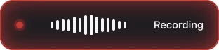
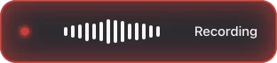
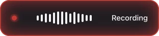
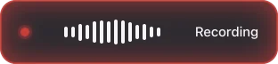
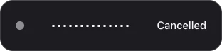
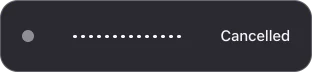
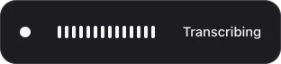
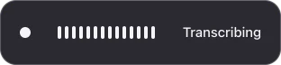

Dictating is one loop: shortcut, speech, text at the cursor. This page covers the loop, the two modes, how to cancel, what ends a recording by itself, and what the indicator and the sounds tell you.
The loop
- Put the cursor where you want the text, in any app.
- Hold ⇧⌘Space on the Mac or CtrlShiftSpace on Windows, and speak.
- Let go. The indicator says Transcribing, and the text is pasted where the cursor is.
The shortcut works whichever app is in front, and needs no permission. The audio stays on your computer and is discarded once transcribed: see Privacy.
If the text does not appear at the cursor, it is waiting on the clipboard: see Where the text lands.
- Pressing the shortcut while it says Transcribing does nothing: wait for the text, then dictate again.
- The menu's Start Recording item does the same as the shortcut: see The icon and its menu.




Your shortcut
The default is ⇧⌘Space on the Mac and CtrlShiftSpace on Windows. You can record another one in Settings.
- It must include ⌘, ⌃ or ⌥ on the Mac, or Ctrl or Alt on Windows. Shift alone does not count, and the Windows key cannot be part of it.
- Some combinations belong to the system. If you pick one, Settings shows it followed by is reserved by macOS. (on Windows, is reserved by Windows.), and Open Whisper uses ⇧⌘D on the Mac or CtrlShiftD on Windows instead. The menu's Start Recording item always shows the shortcut in use.
- If another app already holds the combination, Settings shows it followed by could not be registered. Pick another one; until then, Start Recording in the menu still works.
Windows
CtrlShiftSpace also means something in Word (a non-breaking space) and in VS Code. If you use them, choose another shortcut.
The full list of keys is in Shortcuts and keys.
Hold to Talk or Toggle
| Mode | To start | To stop |
|---|---|---|
| Hold to Talk (default) | Hold the shortcut | Let go |
| Toggle | Press the shortcut once | Press it again |
Change it in Settings, under Mode. It applies at once. Only Toggle can stop by itself after a silence (see When a recording ends by itself).


Cancel with Esc
Changed your mind while recording? Press Esc. The audio is thrown away without being transcribed: nothing is pasted, the clipboard is not touched, and the last transcription stays what it was. The indicator shows Cancelled for about a second, with its own sound, and the menu says Open Whisper — Recording cancelled.
- Open Whisper takes Esc only while it is recording. The rest of the time, Esc reaches your apps as usual.
- Once the indicator says Transcribing, Esc no longer cancels.
Mac
In Toggle, press Esc. In Hold to Talk, press Esc while you still hold the shortcut: with the default, that is ⇧⌘Esc.
A shortcut that holds both ⌥ and ⌘ cannot cancel in Hold to Talk: ⌥⌘Esc is macOS's Force Quit, so Open Whisper leaves it alone.
Windows
In Toggle, press Esc.
In Hold to Talk with the default CtrlShiftSpace, Esc cannot cancel: CtrlShiftEsc opens Task Manager, so Open Whisper leaves it to Windows. The same goes for shortcuts held with Ctrl alone or Alt alone (CtrlEsc opens Start, AltEsc switches windows). Letting go of the keys ends the recording and transcribes it.




When a recording ends by itself
Stop after silence (Toggle only)
In Toggle, Open Whisper can end the recording once you stop talking. It is off by default. Turn it on in Settings → Advanced → Stop after silence, and pick from 1 to 10 seconds, in half-second steps. The row only appears in Toggle mode.
- The wait starts only after you have spoken: silence before the first word never ends a recording.
- Pauses shorter than the time you picked do not end it.
- Steady room noise counts as silence. A breath or a creak does not keep the recording open.
- The silence at the end is cut off before transcription.
- If you press the shortcut within 1.5 seconds after it stopped by itself, Open Whisper takes it as your late "stop" and does not start a new recording.
Maximum length
Every recording, in either mode, stops at a time limit: 120 seconds by default, adjustable from 15 to 1800 seconds (30 minutes) in Settings → Advanced → Max recording. At the limit, what was recorded is transcribed and pasted as usual, and a notification says Recording stopped at the time limit — transcribing what was captured.


The indicator and the sounds
While you dictate, a small indicator appears at the bottom centre of the screen you are using. It stays above every window, full-screen apps included, never takes the focus, and lets clicks pass through.
| The indicator says | When |
|---|---|
| Recording | While it records. A red light, and a level meter that follows your voice. |
| Transcribing | From the moment you stop until the text is delivered. |
| Error | Briefly, when something failed. A notification says what (see below). |
| Cancelled | For about a second, after Esc. |
It disappears when the dictation is over.
Mac
A recording starts with the Tink sound and ends with Pop, whether text was delivered, no speech was heard or something failed. A cancel sounds Purr.
Windows
Open Whisper plays its own sounds: one when recording starts, one when it ends (text delivered, no speech heard or a failure), and one for a cancel.
Screen readers (VoiceOver on the Mac, Narrator on Windows) announce when recording starts, when it is cancelled and when there is an error.




When nothing is pasted
If the recording had no speech, nothing is pasted and no notification appears: you only hear the end sound. A result with no letters or digits, such as a lone full stop, counts as no speech. Try again, closer to the microphone.
Other cases come with a notification:
| Notification | What it means |
|---|---|
| Nothing was recorded — check the microphone permission, or hold the shortcut a moment longer. | The press was too short to record anything, or the microphone permission is missing. |
| Microphone unavailable — check the permission or whether another app is using it. | No microphone is connected, or another app is holding it. |
| Windows is blocking the microphone. Allow it in Settings → Privacy & security → Microphone, including for desktop apps. | Windows only: the system's privacy settings block the microphone, and nothing was recorded. See Permissions. |
| Couldn't transcribe that audio. Try again. | The transcription failed. Dictate again. |
| Couldn't load the speech model. Check Settings. | The chosen model is missing or damaged. In Settings → Advanced → Model, choose Default: see Models. |